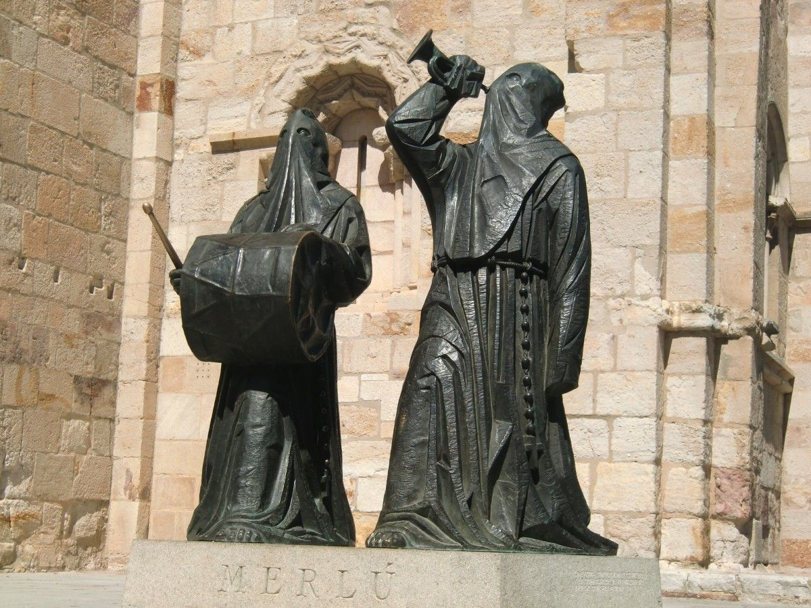

Semana Santa

En 2015 la Junta de Castilla y León con la supervisión del Ministerio de Cultura del Gobierno de España la declaró Bien de Interés Cultural, siendo así la primera Semana Santa de España en ostentar dicha declaración. Tras este último reconocimiento la Semana Santa zamorana aspira a ser reconocida como patrimonio cultural inmaterial de la Humanidad por la UNESCO.
El Merlú es una de las figuras representativas de la Semana Santa de Zamora. Con este nombre se conoce a la pareja de hermanos encargados de congregar al resto de cofrades. El Merlú tiene así la función de llamar al resto de hermanos de la Cofradía Jesús Nazareno Vulgo Congregación para acudir a la asamblea anual y a la procesión del Viernes Santo. ¿Cómo avisa el Merlú?En total, son seis las parejas que se reparten por distintas zonas de la ciudad de Zamora para despertar a los hermanos la madrugada del Viernes Santo. Su recorrido comienza bastante antes de la cinco de la madrugada, hora de inicio de la procesión. El Merlú comienza su recorrido para avisar con sus toques de corneta y tambor. Un sonido que alerta a los hermanos para que acudan hasta la Plaza Mayor para iniciar el desfile procesional.Un sonido característico que eriza la piel de los zamoranos y zamoranas apasionados de la Semana Santa zamorana también mucho antes del Viernes Santo cuando el Merlú llama a la Asamblea General Anual de la Cofradía Jesús Nazareno Vulgo Congregación. Es el sonido que avisa que La Madrugada y la Pasión Zamorana están cerca…